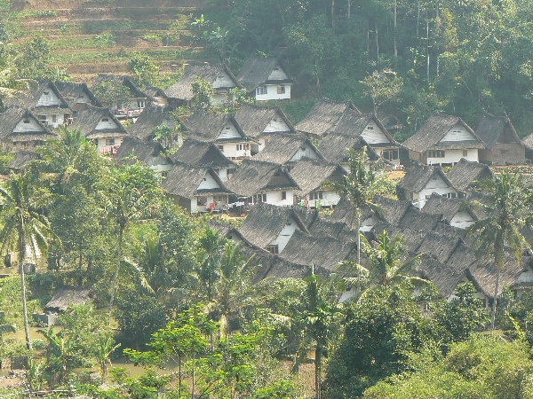

Kampung Naga
Kampung Naga is a traditional village which is inhabited by a community that holds a strong tradition of preserving the way of life their ancestors. The differences are quite visible when compared with other communities surrounding Kampung Naga. The community are living in an atmosphere of a traditional simplicity and environmental wisdom. The Kampung Naga community traditionally maintain the knowledge of their ancestors and their traditional lifestyles in a close harmony with nature, which extends to their construction methods; using local materials of timber, stone, bamboo, thatched materials and palm leaves